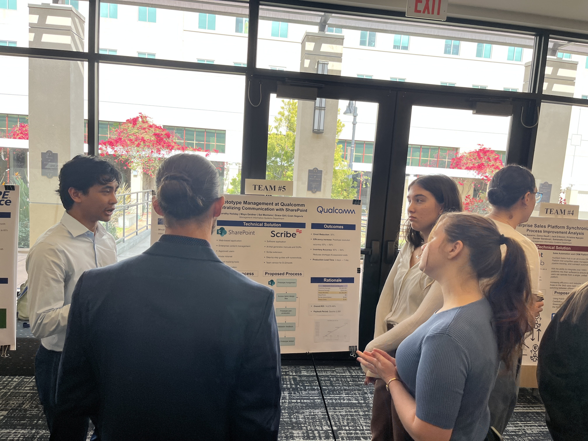
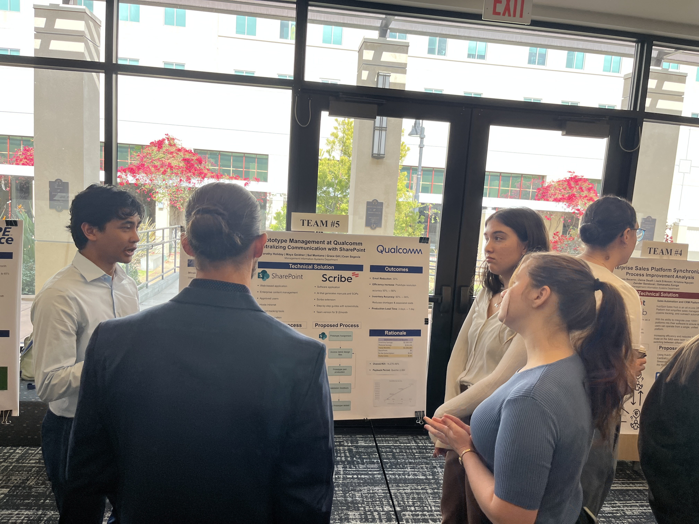

Qualcomm Prototype Management Redesign
Project Overview
This semester-long project focuses on redesigning the communication process in Qualcomm’s manufacturing team of designers and engineers. As a team of 5 MIS majors, we collaborated closely with the Senior Operations Manager of Qualcomm's Manufacturing Department to develop effective solutions for enhancing their communication workflows.
About Qualcomm
Qualcomm, a global leader in telecommunications and innovation, relies heavily on seamless communication to drive its cutting-edge advancements.
What we found
While Qualcomm’s current communication methods were functional, they required improvements to meet evolving operational needs. Additionally, we learned that their team had previously expressed hesitations about adopting new processes or technologies. This added an important layer of change management to our project.
Solution
To achieve our objectives, we utilized a combination of research, process mapping, and iterative feedback sessions with Qualcomm stakeholders. We analyzed pain points in their current workflows, identified inefficiencies, and proposed tailored solutions that aligned with industry best practices while addressing the team's specific challenges. We utilized SharePoint to create a centralized platform for managing prototypes, enabling real-time updates and ensuring that the appropriate personnel had seamless access to necessary resources. This eliminated bottlenecks and allowed team members to work on prototypes without interruptions, significantly improving workflow efficiency. To address the team's resistance to change, we implemented Scribe, a user-friendly tool that provided step-by-step guides for new processes, making the transition smoother and fostering greater adoption of the new system.
Improvements
These solutions delivered measurable improvements, including a 30% reduction in communication dependency on email and a significant drop in production lead time from 3 days to less than a day. Document update compliance surged from 50% to 90%, while communication accuracy improved from 50% to 90%, ensuring fewer errors in critical processes. Additionally, the defect rate decreased from 3% to 1%, demonstrating the effectiveness of the streamlined communication and process management systems in driving quality and efficiency.
Conclusion
This project not only provided practical experience in systems analysis and design within a real-world organizational setting but also strengthened key skills such as collaboration, problem-solving, communication, and adaptability. It offered invaluable insights into the complexities of business consulting and change management, preparing us for future roles in technology-driven environments.
 
